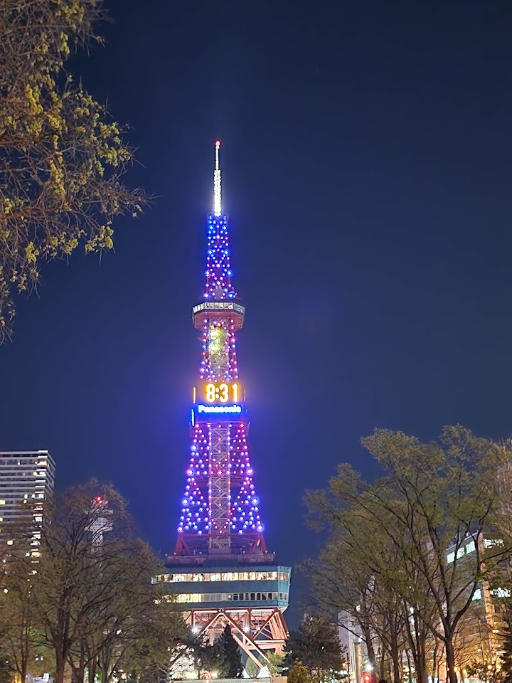
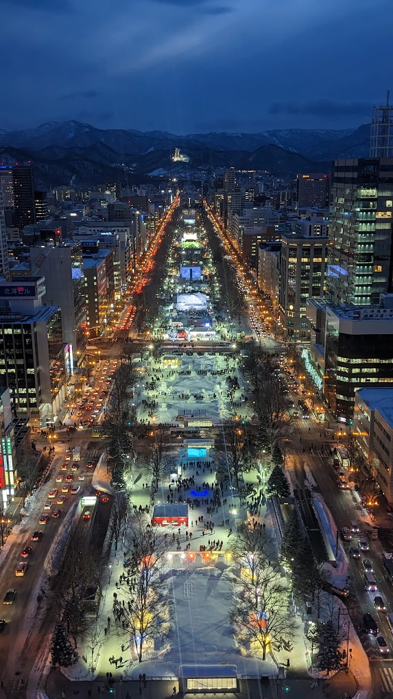
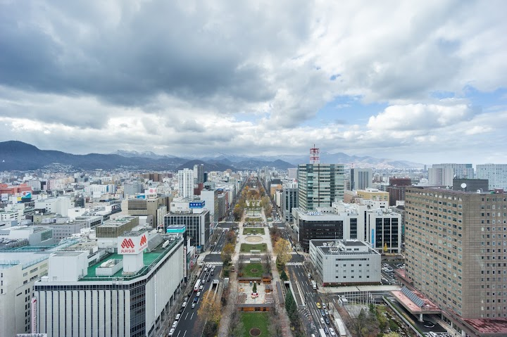
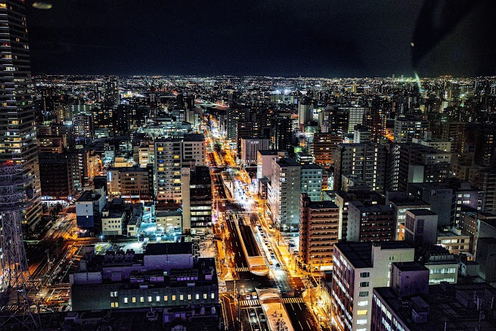
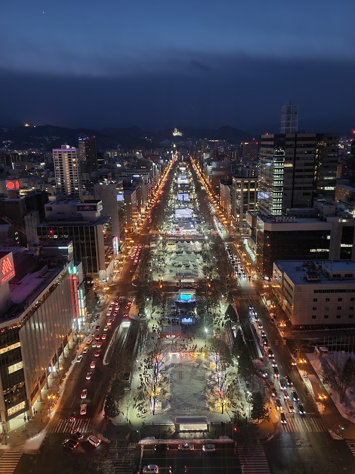

Sapporo TV Tower (suggested)
Famous TV tower built in the 1950s, with an observation deck offering panoramic views of the city.
Open in Google Maps (street view, more photos and reviews there)






Visitor tips on finding it and getting there
A beautiful viewpoint over the city of Sapporo. It is high enough to give an excellent panoramic view, but not so high that poor weather completely ruins the experience—although in heavy fog it probably would not be worthwhile. One of the most striking things is seeing how Sapporo is surrounded by green mountains that almost seem to define the boundaries of the city. It is also wonderful to look down along the long lines of Odori Park and understand the basic layout of the city from above. You can see the smaller waterways, the canal on the other side, the fish market, and many other details
Standing at the eastern terminus of Odori Park (Nishi 1-chome), the Sapporo TV Tower (さっぽろテレビ塔) was built in 1957 and designed by renowned architect Tachu Naito, who also designed Tokyo Tower and Tsutenkaku. Total Height: 147.2 meters. As central Sapporo's most prominent landmark, it functions not only as a broadcast transmission tower, but also as the premier vantage point overlooking the linear green axis of Odori Park and its seasonal festivals. Situated 90.38 meters above ground, the Observation Deck is accessible in about 60 seconds via an exterior transparent sightseeing elevator.